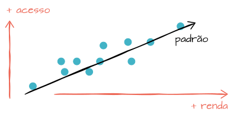
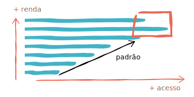
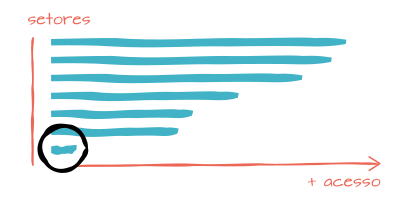

Quanto maior o poder aquisitivo, maior a utilização da internet
O gráfico de dispersão, na visualização da "Renda per capita no estado e utilização da internet" em valores relativos, apresenta um padrão de evolução que nos permite afirmar que existe sim uma relação entre o quanto se ganha e o quanto se acessa a internet.
Quanto maior a renda, mais uso de internet (ou quase)
Observando o gráfico "Rendimento mensal per capita e utilização da internet" em valores relativos, podemos confirmar que quanto mais a pessoa estuda, mais ela está propensa a utilizar a internet.
O interessante é que existe um pequeno desvio no padrão, no topo do gráfico, pois aqueles que ganham mais que 5 salários mínimos acessam menos do que os que ganham entre 3 a 5 salários mínimos. Talvez os que ganham muito, não tenham tanto tempo para acessar a internet.
Pobreza
Apesar de não ser diretamente relacionado ao acesso a internet, visualizando o gráfico em valores absolutos é possível visualizar um dos grandes problemas do país: a má distribuição monetária. Considerando o salário mínimo como o mínimo necessário para a sobrevivência de uma pessoa, é triste pensar que cerca de metade da população brasileira vivem com 1 salário mínimo ou até menos do que isso.
Setor agrícola
Visualizando a "Utilização da internet por setor de atividade" em valores relativos, fica evidente a baixíssima participação (9,1%) dos trabalhadores do setor agrícola no mundo da internet. É uma porcentagem tão baixa que, visualizando o gráfico em valores absolutos ele continua na última posição (1.34 milhões) mesmo tendo o segundo maior número de trabalhadores no setor.
Acesso à internet fora de casa
Não ter computador com acesso a internet em casa não é motivo que impeça 25.63% pessoas de cerca de 100 milhões sem acesso no domicílio a utilizar a internet.
Infelizmente a publicação do IBGE não apresenta os dados de local de acesso à internet destas pessoas, que é um questionamento relevante. Algumas possibilidades são que estas pessoas acessam a internet de lan houses, no serviço ou talvez até mesmo na casa de amigos.